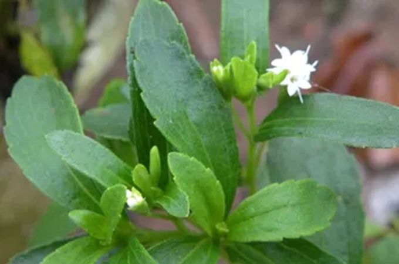

甜叶菊栽培技术

甜叶菊，为菊科泽兰属植物甜叶菊的叶。原产于南美巴拉圭和巴西交界的高山草地。自1977年以来中国北京、河北、陕西、江苏、安徽、福建、湖南、云南等地均有引种栽培。
甜叶菊糖主要有治疗糖尿病、控制血糖、降低血压、抗肿瘤、抗腹泻、提高免疫力，促进新陈代谢等作用，对控制肥胖症、调节胃酸、恢复神经疲劳有很好的功效，对心脏病、小儿龋齿等也有显著疗效，最重要的是它可消除蔗糖的副作用。
一、适宜生产的土壤条件
土层深厚，结构良好，耕层20-40cm，耕层有机质含量1.2%以上，全氮0.09%以上，碱解氮70mg/kg以上，速效磷20-35mg/kg，速效钾130mg/kg以上，土壤PH值7.0左右，微量元素充足，具有较好的保肥、保水能力。
二、精细移栽
1、移栽幼苗的标准
移栽时甜叶菊幼苗大小，对移栽后的成活率和恢复生长关系密切，如苗龄过大，起苗时易伤根系，不利于返青，苗龄过小，则根系小，发育不良，抗旱能力差，因此，必须掌握好移栽时的苗龄。移栽时，幼苗大小标准为：苗子5-7对真叶，苗高8-12厘米，根系发育良好。
2、移栽前施足底肥
本站文章均来自互联网，仅供学习参考，如有侵犯您的版权，请邮箱联系我们删除！
 上一篇
上一篇